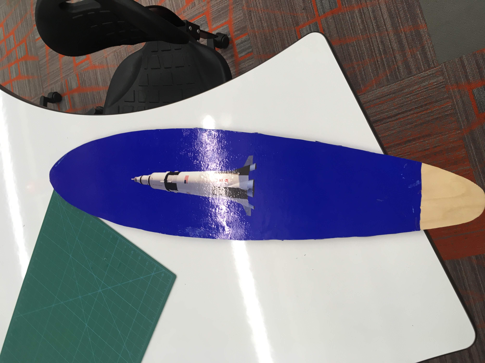

Lamination and Vaccum Forming
16 - 31 October 2018
This week, we used vaccum forming, subtractive manufacturing, and other techniques to make skateboards and molds. The software I used
this week included Fusion 360 and Photoshop.

Assignment 1: Skateboard
This week, we made skateboards from pre-prepared wood. We received seven thin strips of wood, arranged in an alternating pattern of
inflexible and flexible. The inflexible pieces were the ones cut with the grain of the wood, and the flexible pieces were cut
perpendicular to the grain of the wood. The inflexible pieces went on the outside and then alternated with flexible ones in the middle,
in order to give the board both stability and flexibility. We used Titebond III glue to hold it all together, and from there the
process diverged.
For those of us making a pintail skateboard, which is straight and flat, all we had to do from there was sandwich our board between
two larger wood boards and use clamps to hold it all together so that when we retrieved our boards a day later, they would be
fully attached and straight.
For the people making more traditional skateboards, they used vaccum bags and vaccum forms to form the boards. They placed their
boards on top of the vaccum forms inside the vaccum and pumped all the air out of the bag, leaving the skateboard in the shape of the mold.
They left their boards in the bags until the next class, and when they returned, their boards remained in their shape.

Once my board was glued, the edges were pretty uneven, so I had to use a disk sander to even them out. Once that was finished,
I used photoshop to create the design for the bottom of the board. I had to figure out how to remove the background from a picutre
I found of a Saturn V using Photoshop and then put in a solid blue background. After that, I printed out the design on sticker
paper and stuck it on the skateboard.

Assignment 2: Mold